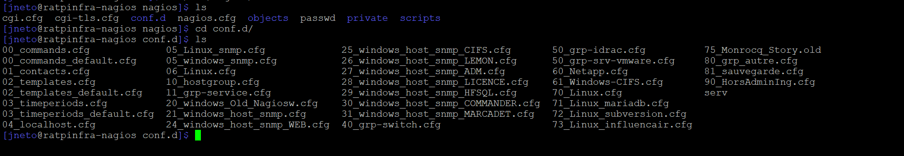

🔍 Contexte du Projet
L'objectif était de centraliser la supervision de l'unité U2D. J'ai participé activement à la migration des sondes depuis PRTG vers un environnement Nagios sous Linux.
Cette mission a nécessité la configuration de fichiers de contacts et la définition de seuils critiques pour garantir la réactivité de l'équipe.
 Interface de supervision temps réel
Interface de supervision temps réel
💻 Développement du Script API
Le défi majeur était de lier les alertes Nagios à notre nouvel outil de ticketing Optick. J'ai développé un script en curl permettant d'envoyer les notifications directement à l'API de l'outil.
Résultat : un gain de temps considérable et une suppression des saisies manuelles.

Extrait du script Curl / APILivrable Technique
Consultez la procédure complète d'installation et les schémas réseau détaillés du projet.
📂 Ouvrir la Procédure (PDF)